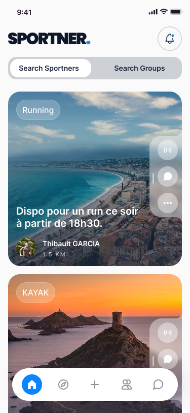

🚀 Lancement imminent
Le sport, c’est mieux
ensemble.
Ne t’entraîne plus seul. Trouve ton partenaire, atteins tes objectifs et rejoins le mouvement.
Les sportifs arrivent bientôt - sois parmi les premiers
